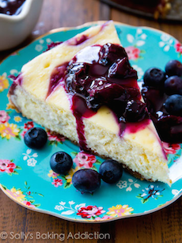

Blueberry Swirl Cheesecake

Blueberry Swirl Cheesecake
“This show-stopping blueberry swirl cheesecake needs to come with a warning label. Really, it does. Cheesecake so creamy, a graham cracker crust so buttery, and blueberry swirls sooo swirly. You will not be able to stop at one sliver. Dangerous, I tell ya!”
INGREDIENTS
Crust
- 1 ½ cups graham cracker crumbs (about 12 full sheet graham crackers)
- 6 tbsp unsalted butter, melted
- ⅓ cup granulated sugar
Cheesecake Filling
- 24 oz. full-fat cream cheese, softened to room temperature
- 1 cup granulated sugar
- 1 cup full-fat sour cream (or yogurt)
- 2 tsp vanilla extract
- 3 large eggs
Blueberry Sauce
- 2 tsp cornstarch
- 1 tsp fresh lemon juice
- 1 tbsp warm water
- 2 cups fresh or frozen blueberries (If using frozen blueberries, do not thaw.)
- 2 tbsp granulated sugar
DIRECTIONS
- Adjust oven rack to the lower third position and preheat the oven to 350°F.
- Spray a 9-inch spring-form pan with nonstick cooking spray.
- Set aside.
Make the blueberry sauce first.
- Whisk the cornstarch, lemon juice, and warm water together in a small bowl until the cornstarch has dissolved.
- Set aside.
- Warm the blueberries and sugar together in a small saucepan over medium heat.
- Stir continuously for 3 minutes until the blueberry juices begin to release.
- Add the cornstarch mixture and continue to stir for another 2–3 minutes, smashing some blueberries as you go. The mixture will start to thicken.
- Remove from heat and put the mixture through a fine mesh strainer into a small bowl (to separate the cooked berries and the juice).
- Keep separated and set both (the cooked berries and the juice) aside.
Make the graham cracker crust.
- Mix the graham cracker crumbs, melted butter, and granulated sugar together in a medium bowl until combined.
- Press into the bottom of the prepared pan and only slightly up the sides. The crust will be thick.
- Wrap aluminum foil on the bottom and tightly around the outside walls of the spring-form pan.
- Bake the crust for 7–8 minutes.
- Allow to slightly cool as you prepare the filling.
Make the filling.
- Using a handheld or stand mixer fitted with a paddle attachment, beat the cream cheese and granulated sugar together on medium speed in a large bowl—about 3 full minutes until the mixture is smooth and creamy.
- Add the sour cream and vanilla, beat until combined.
- On low speed, add the eggs one at a time, beating after each addition until just blended. Do not over mix the filling after you have added the eggs.
- Pour the filling into the cooled crust.
- Drop spoonfuls of the smooth blueberry sauce onto the batter.
- Using a knife, gently swirl.
- If you have leftover blueberry sauce (you will), mix it with the cooked blueberries you set aside. Save for topping the baked cheesecake.
- Place the spring-form pan into a large roasting pan and place into the oven.
- Fill with about 1 inch of hot water. The foil wrapped around the pan will prevent water from leaking inside.
- Bake for 50–60 minutes or until the center is almost set. (Avoid over-baking the cheesecake. When the cheesecake is done, there will still be a 2–3 inch wobbly spot in the center; the texture will smooth out as it cools.)
- Turn the oven off and open the door slightly.
- Let the cheesecake sit in the oven for 1 hour.
- Remove from the oven and allow to cool completely at room temperature.
- Refrigerate for at least 6 hours or overnight (preferred).
- Loosen the cheesecake from the rim of the pan and remove the rim.
- Cut into slices and serve chilled.
- Top with remaining chunky blueberry sauce, if desired.
- Cover leftover cheesecake and store in the refrigerator for up to 4 days.
- Freezes well up to 1 month, covered tightly. Thaw overnight in the refrigerator.